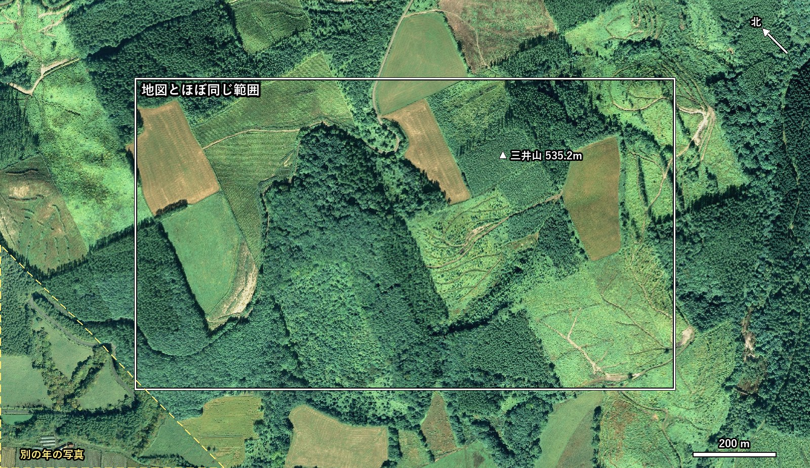

置杵牛 開拓120周年 記念誌
いただいた入植者の地図と同じ向き（北が左上）で、地図の範囲の縦横1.5倍を360dpiで切り出しました。いま（2017年）と、1970年代・1960年代の3枚です。
このページは公開していません。どこからもリンクしておらず、検索にも出ません。記念誌ができましたら削除します。

白い枠が、地図とほぼ同じ範囲です。実際のファイルに線や文字は入っていません。左下の角（黄色の点線）だけは2017年の写真が無いため、別の年の写真で埋めています（地図の範囲の外です）。
ダウンロード（6.9MB）出典：国土地理院の空中写真（地理院タイル）を加工して作成。2017年7〜9月撮影（林野庁）／1974〜1978年撮影／1961〜1969年撮影。2017年の写真の左下の角は簡易空中写真（2004年以降）。